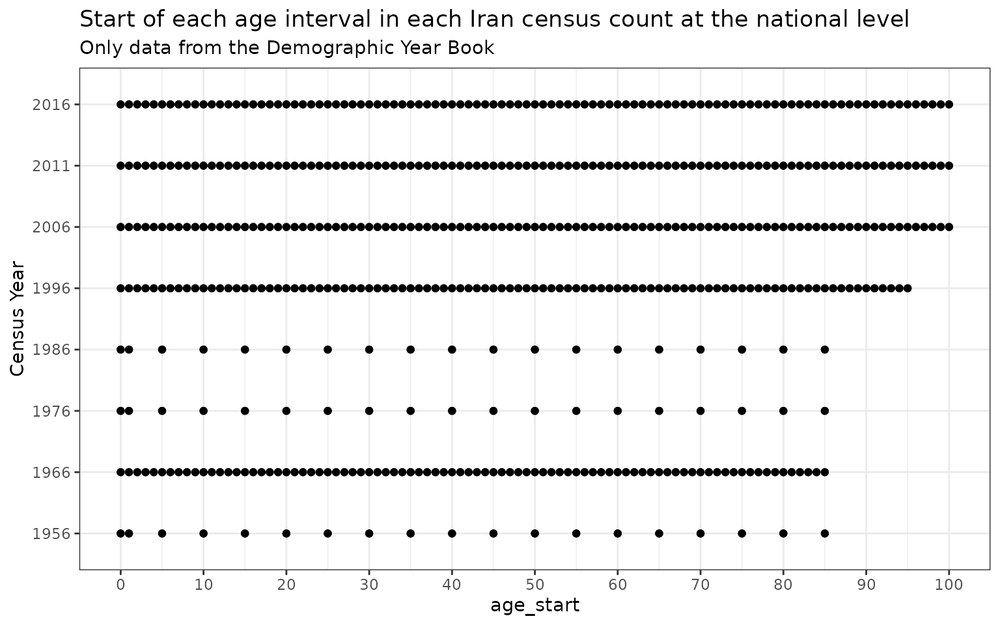
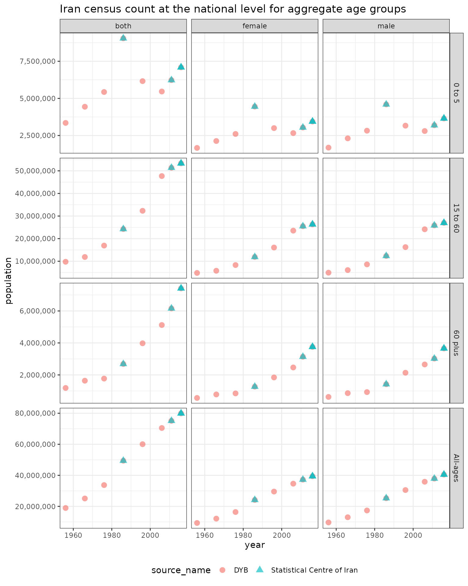

Demographics data is often organized into different hierarchical groupings of variables. These variables can either be:
categorical: locations, sex, race, education groupings (high school, college, etc.), martial status etc.
numeric intervals: age, income, education years etc.
Iran census population counts included in the package are shown below and documented at ?hierarchyUtils::iran_pop. Examples of categorical variables included in this dataset are location, year, sex, source_name, nid and underlying_nid while age_start and age_end are one numeric interval variable.
print(iran_pop)
#> location year sex age_start age_end source_name nid
#> 1: Alborz 1986 female 0 1 Statistical Centre of Iran 6993
#> 2: Alborz 1986 female 1 2 Statistical Centre of Iran 6993
#> 3: Alborz 1986 female 2 3 Statistical Centre of Iran 6993
#> 4: Alborz 1986 female 3 4 Statistical Centre of Iran 6993
#> 5: Alborz 1986 female 4 5 Statistical Centre of Iran 6993
#> ---
#> 10890: Zanjan 2016 male 80 85 Statistical Centre of Iran 299134
#> 10891: Zanjan 2016 male 85 90 Statistical Centre of Iran 299134
#> 10892: Zanjan 2016 male 90 95 Statistical Centre of Iran 299134
#> 10893: Zanjan 2016 male 95 100 Statistical Centre of Iran 299134
#> 10894: Zanjan 2016 male 100 Inf Statistical Centre of Iran 299134
#> underlying_nid population
#> 1: NA 21564
#> 2: NA 21209
#> 3: NA 21857
#> 4: NA 21233
#> 5: NA 20999
#> ---
#> 10890: NA 5434
#> 10891: NA 2391
#> 10892: NA 940
#> 10893: NA 90
#> 10894: NA 11The hierarchyUtils package provides a variety of utility functions that can be used to work with this kind of data. There are functions included to:
aggregate data to different levels of a defined hierarchy for the categorical or numeric intervals variables.
scale data so that the more detailed levels of a hierarchy in aggregate equal the aggregate level.
hierarchyUtils::iran_pop provides sex and age specific population counts for censuses between 1956 and 2016 in Iran. Each of these censuses includes a different set of most detailed age groups which can make comparisons across censuses more difficult without aggregation to common age groups first.

By aggregating to a common set of aggregate age groups using hierarchyUtils::agg we can more easily compare population counts over time. One of the benefits of this function is that the input data does not need to be square, meaning the age groups in each census year for example can be different.
Here we can first aggregate the interval variable age which depends on age_start and age_end columns in the input dataset. present_agg_severity = "skip" because some location-years most detailed age groups are equal to the aggregates specified in `agg_age_mapping so we need to include those in the resulting aggregates.
value_cols = "population"
id_cols <- names(iran_pop)[!names(iran_pop) %in% value_cols]
# reassign unknown age groups
iran_pop <- iran_pop[age_start == 999 & age_end == 999, c("age_start", "age_end") := list(NA, NA)]
# aggregate to aggregate age groups
agg_age_mapping <- data.table(
age_start = c(0, 0, 15, 60),
age_end = c(Inf, 5, 60, Inf),
include_NA = c(T, F, F, F)
)
agg_age_mapping
#> age_start age_end include_NA
#> 1: 0 Inf TRUE
#> 2: 0 5 FALSE
#> 3: 15 60 FALSE
#> 4: 60 Inf FALSE
iran_pop_aggs <- hierarchyUtils::agg(
dt = iran_pop,
id_cols = id_cols,
value_cols = value_cols,
col_stem = "age",
col_type = "interval",
mapping = agg_age_mapping,
# this is specified since some location-years most detailed age groups are
# equal to the aggregates specified in `agg_age_mapping`
present_agg_severity = "skip"
)
#> Aggregating age
#> Interval group 1 of 9: [NA, NA),[0, 1),[1, 2),[2, 3),[3, 4),[4, 5),[5, 6),[6, 7),[7, 8),[8, 9),[9, 10),[10, 11),[11, 12),[12, 13),[13, 14),[14, 15),[15, 16),[16, 17),[17, 18),[18, 19),[19, 20),[20, 21),[21, 22),[22, 23),[23, 24),[24, 25),[25, 26),[26, 27),[27, 28),[28, 29),[29, 30),[30, 31),[31, 32),[32, 33),[33, 34),[34, 35),[35, 36),[36, 37),[37, 38),[38, 39),[39, 40),[40, 41),[41, 42),[42, 43),[43, 44),[44, 45),[45, 46),[46, 47),[47, 48),[48, 49),[49, 50),[50, 51),[51, 52),[52, 53),[53, 54),[54, 55),[55, 56),[56, 57),[57, 58),[58, 59),[59, 60),[60, 61),[61, 62),[62, 63),[63, 64),[64, 65),[65, 66),[66, 67),[67, 68),[68, 69),[69, 70),[70, 71),[71, 72),[72, 73),[73, 74),[74, 75),[75, 76),[76, 77),[77, 78),[78, 79),[79, 80),[80, 81),[81, 82),[82, 83),[83, 84),[84, 85),[85, 86),[86, 87),[87, 88),[88, 89),[89, 90),[90, 91),[91, 92),[92, 93),[93, 94),[94, 95),[95, 96),[96, 97),[97, 98),[98, 99),[99, 100),[100, Inf)
#> Aggregate 1 of 4: [0, Inf)
#> Aggregate 2 of 4: [0, 5)
#> Aggregate 3 of 4: [15, 60)
#> Aggregate 4 of 4: [60, Inf)
#> Interval group 2 of 9: [NA, NA),[0, 5),[5, 10),[10, 15),[15, 20),[20, 25),[25, 30),[30, 35),[35, 40),[40, 45),[45, 50),[50, 55),[55, 60),[60, 65),[65, 70),[70, 75),[75, 80),[80, Inf)
#> Aggregate 1 of 4: [0, Inf)
#> Aggregate 2 of 4: [0, 5)
#> Aggregate 3 of 4: [15, 60)
#> Aggregate 4 of 4: [60, Inf)
#> Interval group 3 of 9: [NA, NA),[0, 1),[1, 5),[5, 10),[10, 15),[15, 20),[20, 25),[25, 30),[30, 35),[35, 40),[40, 45),[45, 50),[50, 55),[55, 60),[60, 65),[65, 70),[70, 75),[75, 80),[80, 85),[85, Inf)
#> Aggregate 1 of 4: [0, Inf)
#> Aggregate 2 of 4: [0, 5)
#> Aggregate 3 of 4: [15, 60)
#> Aggregate 4 of 4: [60, Inf)
#> Interval group 4 of 9: [NA, NA),[0, 1),[1, 2),[2, 3),[3, 4),[4, 5),[5, 6),[6, 7),[7, 8),[8, 9),[9, 10),[10, 11),[11, 12),[12, 13),[13, 14),[14, 15),[15, 16),[16, 17),[17, 18),[18, 19),[19, 20),[20, 21),[21, 22),[22, 23),[23, 24),[24, 25),[25, 26),[26, 27),[27, 28),[28, 29),[29, 30),[30, 31),[31, 32),[32, 33),[33, 34),[34, 35),[35, 36),[36, 37),[37, 38),[38, 39),[39, 40),[40, 41),[41, 42),[42, 43),[43, 44),[44, 45),[45, 46),[46, 47),[47, 48),[48, 49),[49, 50),[50, 51),[51, 52),[52, 53),[53, 54),[54, 55),[55, 56),[56, 57),[57, 58),[58, 59),[59, 60),[60, 61),[61, 62),[62, 63),[63, 64),[64, 65),[65, 66),[66, 67),[67, 68),[68, 69),[69, 70),[70, 71),[71, 72),[72, 73),[73, 74),[74, 75),[75, 76),[76, 77),[77, 78),[78, 79),[79, 80),[80, 81),[81, 82),[82, 83),[83, 84),[84, 85),[85, 86),[86, 87),[87, 88),[88, 89),[89, 90),[90, 91),[91, 92),[92, 93),[93, 94),[94, 95),[95, Inf)
#> Aggregate 1 of 4: [0, Inf)
#> Aggregate 2 of 4: [0, 5)
#> Aggregate 3 of 4: [15, 60)
#> Aggregate 4 of 4: [60, Inf)
#> Interval group 5 of 9: [0, 1),[1, 2),[2, 3),[3, 4),[4, 5),[5, 6),[6, 7),[7, 8),[8, 9),[9, 10),[10, 11),[11, 12),[12, 13),[13, 14),[14, 15),[15, 16),[16, 17),[17, 18),[18, 19),[19, 20),[20, 21),[21, 22),[22, 23),[23, 24),[24, 25),[25, 26),[26, 27),[27, 28),[28, 29),[29, 30),[30, 31),[31, 32),[32, 33),[33, 34),[34, 35),[35, 36),[36, 37),[37, 38),[38, 39),[39, 40),[40, 41),[41, 42),[42, 43),[43, 44),[44, 45),[45, 46),[46, 47),[47, 48),[48, 49),[49, 50),[50, 51),[51, 52),[52, 53),[53, 54),[54, 55),[55, 56),[56, 57),[57, 58),[58, 59),[59, 60),[60, 61),[61, 62),[62, 63),[63, 64),[64, 65),[65, 66),[66, 67),[67, 68),[68, 69),[69, 70),[70, 71),[71, 72),[72, 73),[73, 74),[74, 75),[75, 76),[76, 77),[77, 78),[78, 79),[79, 80),[80, 81),[81, 82),[82, 83),[83, 84),[84, 85),[85, Inf)
#> Aggregate 1 of 4: [0, Inf)
#> Aggregate 2 of 4: [0, 5)
#> Aggregate 3 of 4: [15, 60)
#> Aggregate 4 of 4: [60, Inf)
#> Interval group 6 of 9: [0, 1),[1, 5),[5, 10),[10, 15),[15, 20),[20, 25),[25, 30),[30, 35),[35, 40),[40, 45),[45, 50),[50, 55),[55, 60),[60, 65),[65, 70),[70, 75),[75, 80),[80, 85),[85, Inf)
#> Aggregate 1 of 4: [0, Inf)
#> Aggregate 2 of 4: [0, 5)
#> Aggregate 3 of 4: [15, 60)
#> Aggregate 4 of 4: [60, Inf)
#> Interval group 7 of 9: [0, 1),[1, 2),[2, 3),[3, 4),[4, 5),[5, 6),[6, 7),[7, 8),[8, 9),[9, 10),[10, 11),[11, 12),[12, 13),[13, 14),[14, 15),[15, 16),[16, 17),[17, 18),[18, 19),[19, 20),[20, 21),[21, 22),[22, 23),[23, 24),[24, 25),[25, 26),[26, 27),[27, 28),[28, 29),[29, 30),[30, 31),[31, 32),[32, 33),[33, 34),[34, 35),[35, 36),[36, 37),[37, 38),[38, 39),[39, 40),[40, 41),[41, 42),[42, 43),[43, 44),[44, 45),[45, 46),[46, 47),[47, 48),[48, 49),[49, 50),[50, 51),[51, 52),[52, 53),[53, 54),[54, 55),[55, 56),[56, 57),[57, 58),[58, 59),[59, 60),[60, 61),[61, 62),[62, 63),[63, 64),[64, 65),[65, 66),[66, 67),[67, 68),[68, 69),[69, 70),[70, 71),[71, 72),[72, 73),[73, 74),[74, 75),[75, 76),[76, 77),[77, 78),[78, 79),[79, 80),[80, 81),[81, 82),[82, 83),[83, 84),[84, 85),[85, 86),[86, 87),[87, 88),[88, 89),[89, 90),[90, 91),[91, 92),[92, 93),[93, 94),[94, 95),[95, 96),[96, 97),[97, 98),[98, 99),[99, 100),[100, Inf)
#> Aggregate 1 of 4: [0, Inf)
#> Aggregate 2 of 4: [0, 5)
#> Aggregate 3 of 4: [15, 60)
#> Aggregate 4 of 4: [60, Inf)
#> Interval group 8 of 9: [0, 5),[5, 10),[10, 15),[15, 20),[20, 25),[25, 30),[30, 35),[35, 40),[40, 45),[45, 50),[50, 55),[55, 60),[60, 65),[65, 70),[70, 75),[75, 80),[80, 85),[85, 90),[90, 95),[95, 100),[100, Inf)
#> Aggregate 1 of 4: [0, Inf)
#> Aggregate 2 of 4: [0, 5)
#> Aggregate 3 of 4: [15, 60)
#> Aggregate 4 of 4: [60, Inf)
#> Interval group 9 of 9: [0, 5),[5, 10),[10, 15),[15, 20),[20, 25),[25, 30),[30, 35),[35, 40),[40, 45),[45, 50),[50, 55),[55, 60),[60, 65),[65, 70),[70, 75),[75, 80),[80, Inf)
#> Aggregate 1 of 4: [0, Inf)
#> Aggregate 2 of 4: [0, 5)
#> Aggregate 3 of 4: [15, 60)
#> Aggregate 4 of 4: [60, Inf)Then we can aggregate the categorical variable sex.
# aggregate to both sexes combined
sex_mapping <- data.table(parent = "both", child = c("female", "male"))
sex_mapping
#> parent child
#> 1: both female
#> 2: both male
iran_pop_aggs_both_sexes <- hierarchyUtils::agg(
dt = iran_pop_aggs,
id_cols = id_cols,
value_cols = value_cols,
col_stem = "sex",
col_type = "categorical",
mapping = sex_mapping
)
#> Aggregating sex
#> Aggregate 1 of 1: both
iran_pop_aggs <- rbind(iran_pop_aggs, iran_pop_aggs_both_sexes, use.names = T)The output dataset returns all the new aggregate rows made as can be seen below with the same columns as what was included originally in the dataset.
iran_pop_aggs[grepl("Iran", location) & year == max(year) & age_start == 0 & age_end == Inf]
#> location year sex age_start age_end
#> 1: Iran (Islamic Republic of) 2016 female 0 Inf
#> 2: Iran (Islamic Republic of) 2016 male 0 Inf
#> 3: Iran (Islamic Republic of) 2016 female 0 Inf
#> 4: Iran (Islamic Republic of) 2016 male 0 Inf
#> 5: Iran (Islamic Republic of) 2016 both 0 Inf
#> 6: Iran (Islamic Republic of) 2016 both 0 Inf
#> source_name nid underlying_nid population
#> 1: DYB 140966 299134 39427828
#> 2: DYB 140966 299134 40498442
#> 3: Statistical Centre of Iran 299134 NA 39427828
#> 4: Statistical Centre of Iran 299134 NA 40498442
#> 5: DYB 140966 299134 79926270
#> 6: Statistical Centre of Iran 299134 NA 79926270There are also some years in the dataset where data is only available at the province level and has not yet been aggregated to the national level.
One difficulty with this data is that the province boundaries have changed over time in Iran so sometimes data is only available for historical locations (locations that existed in previous years but that have since been split into multiple locations).
A mapping of how province boundaries have changed from the 1956 census to present day is included in the package and documented at ?hierarchyUtils::iran_mapping.
Tree data structures are really useful for representing hierarchical data which is exactly the type of data that is being manipulated when aggregating or scaling data to different levels of a hierarchy. The mappings used to define the hierarchical structure of categorical data in hierarchyUtils must have a parent and child column defining relationships between nodes in the tree (like in hierarchyUtils::iran_mapping).
The root node of the tree shown below is “Iran” at the national level. The leaf nodes of the tree are the present day provinces and all other nodes are the historical provinces. Colored in green is everywhere data is directly available for each location, blue are locations where aggregations are possible and red is where data is missing (or aggregation is not possible). Here we can see in 2006 that a historical province called “Tehran” included two present day provinces, “Tehran” and “Alborz”.
# this function is used internally by `hierarchyUtils::agg` but is available to help
# visualize why some aggregates can't be made, what data is missing, etc.
agg_tree <- hierarchyUtils::create_agg_tree(
mapping = iran_mapping,
exists = iran_pop_aggs[year == 2006 & source_name != "DYB", unique(location)],
col_type = "categorical")
hierarchyUtils::vis_tree(agg_tree)Now we can make location aggregates but need to use two arguments that are helpful when aggregating non-square data. present_agg_severity = 'none' because in some source-years Iran is already included so the function needs to drop the aggregate and recalculate it. missing_dt_severity = "none" because in some source-years we don’t have the present day provinces and its okay to just make the aggregates that are possible given the data that is available.
iran_pop_aggs_location <- hierarchyUtils::agg(
dt = iran_pop_aggs,
id_cols = id_cols,
value_cols = value_cols,
col_stem = "location",
col_type = "categorical",
mapping = iran_mapping,
present_agg_severity = "none",
missing_dt_severity = "none"
)
#> Aggregating location
#> Aggregate 1 of 15: Tehran 2006
#> Aggregate 2 of 15: Tehran 1986-1995
#> Aggregate 3 of 15: Markazi 1966-1976
#> Aggregate 4 of 15: Markazi 1956
#> Aggregate 5 of 15: Zanjan 1976-1996
#> Aggregate 6 of 15: Gilan 1956-1966
#> Aggregate 7 of 15: Mazandaran 1956-1996
#> Aggregate 8 of 15: East Azarbayejan 1956-1986
#> Aggregate 9 of 15: Kermanshahan 1956
#> Aggregate 10 of 15: Khuzestan and Lorestan 1956
#> Aggregate 11 of 15: Fars and Ports 1956
#> Aggregate 12 of 15: Khorasan 1956-1996
#> Aggregate 13 of 15: Isfahan and Yazd 1966
#> Aggregate 14 of 15: Isfahan and Yazd 1956
#> Aggregate 15 of 15: Iran (Islamic Republic of)
iran_pop_aggs <- rbind(iran_pop_aggs, iran_pop_aggs_location)The population for these aggregates age groups at the national level can now be plotted over time.
